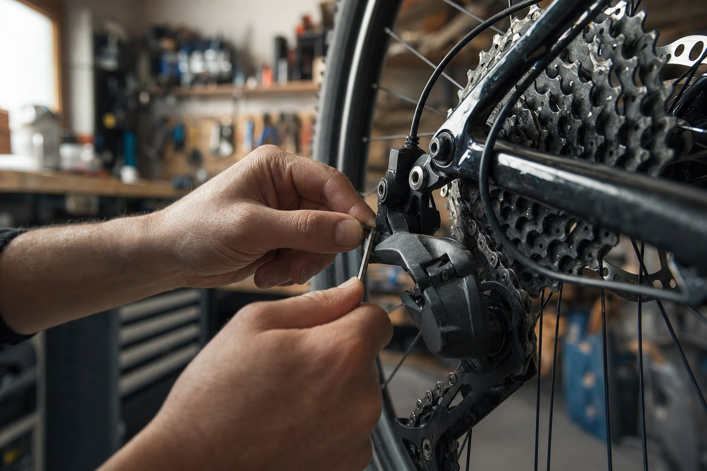
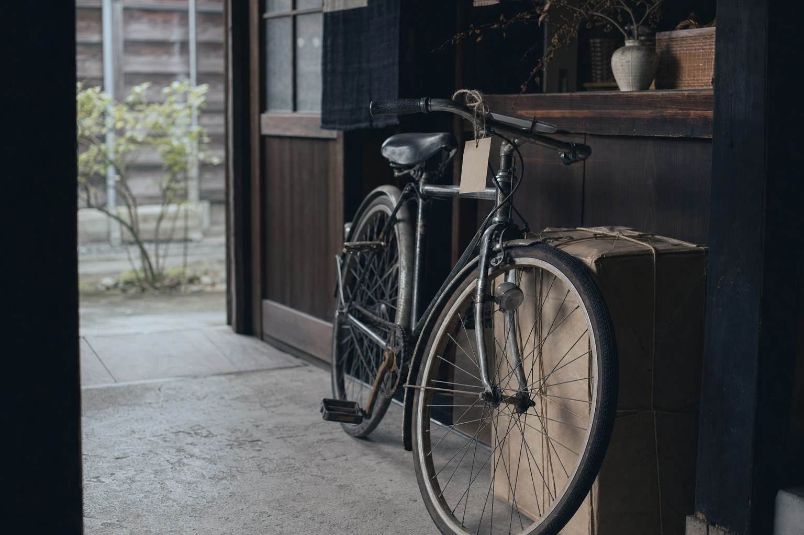
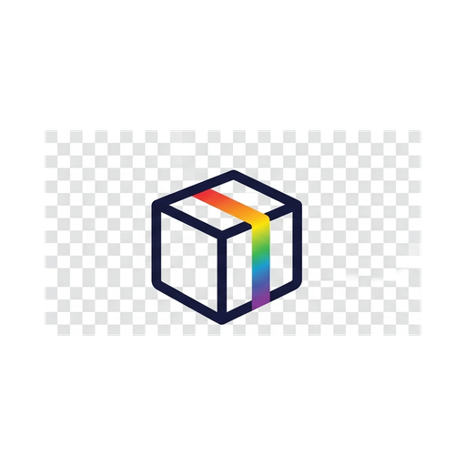
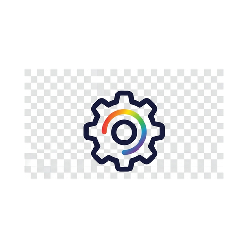
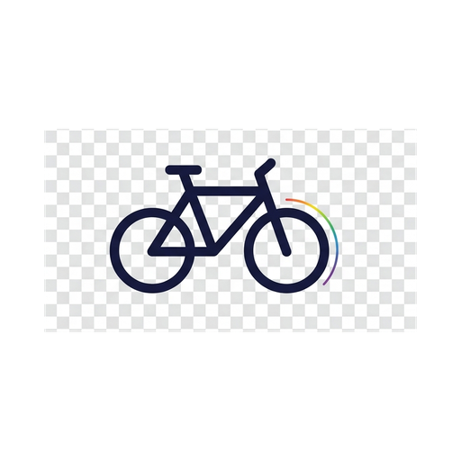

RAINBOWは、石川県かほく市を拠点に、リユース物販・IT業務効率化・自転車リユース（めぐり自転車）を営む個人事業です。まだ活かせるモノや、手間のかかる作業を、必要とされる場所へ。確かな整備と技術、そして誠実な対応で、小さくても信頼される仕事を積み重ねています。
社名の「RAINBOW」には、異なる七色が調和して美しい弧を描くように、「一つの専門に縛られず、多彩な事業で関わる人の暮らしを彩りたい」という思いを込めています。
物販・IT・自転車リユースという異なる事業に共通するのは、「売り手・買い手・世の中の三方すべてにとって気持ちのよい取引」という姿勢です。まだ使えるモノを活かし、無駄な手間を減らし、価値を正直に伝える。派手さより、目の前の一件を丁寧に積み重ねることを大切にしています。



メルカリShopsなどのプラットフォームで、まだ価値のあるモノを必要とする方へお届けします。仕入れ・撮影・出品まで、EC現場での経験を活かして一貫して運営しています。

GAS（Google Apps Script）などを使い、日々の定型業務を自動化します。フォーム集計から通知、スプレッドシート整理まで。クラウドワークスにて「RAINBOW工房」の名で受託しています。
ポートフォリオを見る →
自転車安全整備士による、出張買取・出張引取サービス。整備して価値を上げ、次の乗り手へつなぎます。E-bike（電動アシスト）やスポーツ車の専門査定にも対応します。
めぐり自転車のサイトへ →これらの実績を積み重ねた先に、メーカーからの正規仕入れによるAmazon物販への展開を構想しています。現在は準備段階であり、まだ提供しているサービスではありません。
古物商許可・自転車安全整備士・第二種電気工事士・Webクリエイター能力認定試験エキスパートを保有。資格に基づいた確かな判断と品質でお応えします。
小売・物流・便利屋として、モノが動く全工程を現場で経験。だからこそ、お客様目線の丁寧で分かりやすい対応が身についています。
業務効率化のツールを自分で設計・開発できるのが強みです。現場で感じた「面倒」を、机上の空論ではなく実際に動く仕組みで解決します。
マニュアル通りの機械的な対応や、担当者への丸投げはありません。代表が直接、お客様の疑問や不安に向き合い、ネット越しでも確かな信頼を築きます。
各サービスへのお問い合わせ・ご相談を承っています。ご連絡はメール、または各サービスの窓口からどうぞ。
※ 電話でのお問い合わせは現在受け付けておりません。